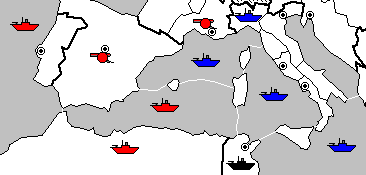

Editor's Note: This article was originally published on the German Diplomatic Pouch in it's native form, "Die große Pattlinie". Special thanks to Timo Müller for his continued work on the Zines and Uwe Britfeld for the English translation.
It’s always the same: You knock off opponent after opponent, you’re just about to go for victory – and, at the last second, you find yourself blocked by some clown! Nothing works, several agreements sit uselessly by. This is what’s called a ‘Stalemate’. Everyone who’s ever been in this situation knows and curses it: “Stalemates stink” and should be forbidden! There has to be a map somewhere that contains no stalemate lines. The ‘clown’, on the other hand, is of a slightly different opinion. “Stalemates are great!” he says. They give everyone a chance to survive. Why bother playing when you have no hope left? Naturally, one should only look for stalemates when there’s no other chance – during the endgame. Indeed, there are many games during which two or three opponents simply agree to a draw without bothering to play out a theoretically possible final battle. During the game, the players simply worked things out so well that, by the end of the game, they don’t want to create the animosity. A few years ago, there were very controversial discussions held at Judge DEAC. I, personally understand the mentality of the situation (and have, in fact, played that way myself on occasion) and I don’t want to reopen that old debate. I only mention it to make a suggestion: In games such as that, a true endgame never takes place. It would be better to name it 'abandoning' the game. Abandonment sometimes occurs in games involving more than two players. In situations where the better player or players are afraid to make any move that might weaken their stronger positions and help someone else to win. They start to wonder whether it would be better to create a stalemate. There are several examples of stalemates which I don’t care to enumerate here (another website has already addressed that [Editor's Note: Matthew Self's, "Visual Index to Stalemate Positions" was referenced here]). In this article, I discuss the “Great Stalemate Line”: This position shows a 2-player game and can be created with a number of variations: Standing in the west could be E, F, or, G, in the east, R, T, A, or I. An examination of the JDPR data bank showed that 31 percent of all 2-player games deteriorate to a stalemate with this distribution of SCs. In 34 percent of single winner outcomes, the eventual winner had all SCs on one or the other side of this line. Therefore, in order to win, you must be aware of this line. At the beginning of a game, there are often two almost unrelated to each other functioning theaters of war: Benelux in the west and the Balkans in the East. And looking at the layout above, the nations identified as ‘Western Powers’ are all grouped around Benelux whereas the ‘Eastern Powers’ are grouped around the Balkans (keep in mind that this depiction is simplistic and one should never lose track of the overall picture). Perhaps, an indicator for the potential of the ‘Great Stalemate Line’ is: On every half of the board there is a rule: There Can Only Be One! ;-) The oft-discussed alliances between R/T, E/F and A/I are all on the same side of the line, so a 2-player game between these is improbable. There must be at least one other nation on the other side of the draw or the alliance must be broken. This is not to say that the great Stalemate line only exists for 2-player games; it can also play a part in a 3 (or more) person draw. To do this, the players on one side of the line must be in strong enough agreement that they play as a single Nation, a very difficult undertaking. Upon closer examination of the ‘great Stalemate Line’, we can see that it actually consists of 3 unrelated functional ‘regional’ lines.
The opponents will only seldom meet everywhere at the same time. Instead, the three regions ‘lead’ to one another. St. PetersburgIf a western nation wishes to stand against St. Petersburg, they can build up to 4 pacts (Bar, Nor, Fin, and Bot), on the other side, behind St. Petersburg, only Mos and Lvn have access. St. Peterburg can, therefore, always be beaten from the west – provided one has enough collaborators. Subsequently, though, it is impossible, without support from the South to continue forward – against Mos and Lvn, St. Petersburg and Bot have an equal strength opponent. The attempt is rather pointless and even an eventual conquest of Lvn can easily be recaptured. After the conquest of St. Petersburg, one could also confidently use ones strength for clever applications – unless one can capture both Moscow and Warsaw. And even if this is accomplished, one comes immediately face to face with the next Stalemate. From the eastern view, St. Petersburg is somewhat more complex: Insofar as we look on Russia as an eastern nation, StP presents itself somewhat differently than for the other ‘eastern powers’. St. Petersburg is a Russian homeland SC therefore, Russia is the only eastern nation in the area that can put a fleet on the North Sea. The other eastern nations are required to first pass through the Mediterranean and the Atlantic. You could probably win the game twice before the fleet arrives in the North Sea. Russia on the other hand can pick and choose on which coast it wishes to build a new fleet. For the western power, that quickly establishes great danger. Other Eastern Nations have no chance to hold St. Petersburg – even if they were able to press an army forward, the west would easily be able to mop them up. GermanyThis ‘front’ here also passes right through the middle of the homeland of a single Nation. Therefore, there is also here a unique situation: Units must be sent into all German Homeland SCs so that Germany cannot build any new units. Curiously, it seems that Germany can withstand these situations better than other nations. But, I don’t have an explanation for this. The MediterraneanIn addition to the above-mentioned Stalemate Line, the Mediterranean also creates additional variations. In this case it makes no difference who holds Tunisia and whether Spain has Fleets or Armies in the Mediterranean, in either case, it’s a stalemate. The Mediterranean has its own special ‘nasties’. It’s just brimming with Stalemate conditions. (Mat, Ion, Aeg), and he who wishes to control the game in this area must establish momentum as quickly as possible, as long as not too many fleets are in motion. But, this is exactly the problem: An intelligent Frenchman would have very little interest to attack Italy at the outset. Austria is traditionally the Land with the fewest Fleets while Russia has no access to the Mediterranean. This leaves Italy or Turkey, and it is known that between these two there are constantly conflicts. The winner will have many Fleets and will rule the Mediterranean. To break through him is, in my opinion, almost impossible –- one can only hope to stop him. Achieving Diplomatic BalanceIf, however, one is himself the great power here, one can work to get Marseilles and Spain. In order to do this it is absolutely essential to simultaneously have Fleets in Wes and Gol – this can even be more important than to quickly overrun Tunisia – Tunisia will fall by itself. Having accomplished the conquest of Marseilles and Spain without getting to Mat, one immediately comes face-to-face with the next Stalemate: There is no way to go against 3 fleets in and around the area of Mat. A VariationThe great Stalemate Line also allows itself a variation: The Eastern Power may have already captured Marseilles and Spain while the Western Power got Warsaw and Moscow. This, of course, only works when we regard Russia as a Western Nation – and suddenly, a two-way draw between R and T is possible! This variation is much rarer to encounter than the above-mentioned ‘Pure Version’. Even so, it must not be overlooked.
Appendix: Examination from the JDPR-DatabaseThe above-mentioned examination from the JDPR-Database was published on March 1, 2002 with the standard settings of the ‘Games’ formula with the following exceptions:
The 'Game Result' and 'Final center ownership pattern' results were accomplished with the following entries:
My thanks go to Alain Tesio, who was particularly helpful in the creation of this Examination.
|
||||||||||||||||||||||||
|
||||||||||||||||||||||||
|
Martin Asal (asal@gmx.de) If you wish to e-mail feedback on this article to the author, click on the letter above. |
||||||||||||||||||||||||